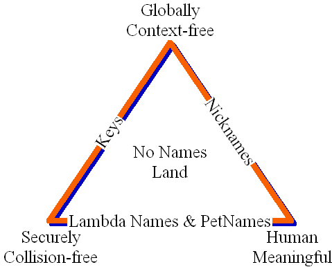
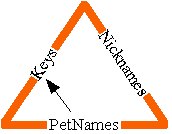
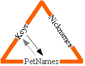
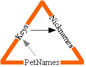
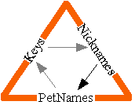
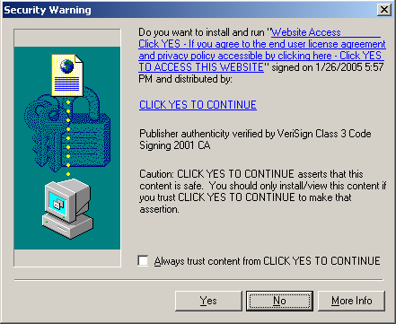

| |
Lambda
for Humans |
||||||
In the mutually suspicious decentralized electronic world we find ourselves in, humans face a dilemma. Computers need to communicate securely with other computers, and in so doing, securely designate various objects. No problem so far, there are a number of cryptographic means by which a bit string (usually no less than 128 bits) can be used globally (ie, between mutually suspicious parties, and without translation) as secure designators. The clearest example is public key fingerprints, used to designate that entity which knows and uses the corresponding private key. Let's call such global cryptographic identifiers "keys".
Note: In E, a "key" is a cryptographic capability, and is represented by a triple: a public key fingerprint, an unguessable secret number (known as a SwissNumber), and TCP/IP location hint information used to try to contact the object. This last part is not assumed to have any security properties.
Humans also need to communicate securely with other humans, and in so doing, securely designate various objects, including yet other humans. Unfortunately, due to their peculiar nature, humans are unable to memorize large numbers of keys, and use them as names for a multitude of objects. Fortunately, a human-computer symbiote -- a human augmented with a personal computer which he trusts (a personal TCB) -- can securely speak to other such symbiotes using only keys as designators. In order for the human part of such a symbiote to be effective, the computer part must translate between the world of keys and the world of human-understandable and memorable names. This translation must provide the human with a local world of name-based designation whose security properties match the security properties of keys.
Background
The progression of attempts to solve this problem has followed a trajectory from more centralized to more decentralized solutions.
-
DNS (ICANN) and Central CA (VeriSign) Model. Central authorities administering a global name space.
-
The PGP Web of Trust. No central authority, but still a global name space. No coherent theory of what's being authenticated.
-
SPKI. Decentralized network of name-spaces. But without a translation-on-introduction mechanism, humans can only participate in a second class way.
-
The Communities.com PetName System. A SPKI-like decentralized network of name-spaces, with a translation-on-introduction mechanism.
The last, unfortunately, was never documented for external consumption. Though http://www.eros-os.org/~majordomo/dcms-dev/0036.html and http://www.eros-os.org/~majordomo/dcms-dev/0039.html document Jonathan Shapiro's adaptation of this idea for use in a configuration management system.
In another forum where cryptographic capability ideas were being vigorously challenged, a valid concern was raised for which we didn't have a publicly documented answer, beyond the above two brief email messages. How can we enable humans to deal securely with cryptographic capabilities as human-memorable designators? This document answers that question. Since the discussion in that forum was already using EChat as an example, and since Communities.com originally developed the PetName system for a multi-way chat application, I will present the ideas in terms of a hypothetical augmented EChat.
This proposal derives from thinking about the lambda-calculus/capability perspective on naming. Program text also uses variable names rather than designating particular objects directly. An argument variable name is used to send an anonymous object reference to be bound to a parameter variable name on reception. It doesn't matter whether the two names are the same, since names are only in a local scope. Lambda-based programs never communicate names to each other, even though they use only names to bring about their communications. This is a pure key-centric approach to communication. The PetName system started as a faithful application of the principles that make lambda's magic work. It has grown some from there, but this isn't necessarily good.
Note that this proposal is useful not just for supporting capabilities specifically, but more generally whenever human speak in a textual fashion to other humans and would like to embed keys in much the way they type in, or read, a normal name. Besides EChat, this could all probably be applied to PGP email (thereby augmenting it with user-local names).
See also Norm's speculations on the connection between secure designation and General Relativity's view of space.
Zooko's Triangle
Zooko's "Names: Decentralized, Secure, Human-Memorizable: Choose Two" brings these ideas together into a framework we call Zooko's Triangle. Clay Shirky's Domain Names: Memorable, Global, Non-political? and its "pick two" conclusion, is an (uncredited) restatement of much of Zooko's paper, with some excellent writing, but without a path towards a technical solution. Indeed, Shirky claims no non-political solution is possible. We claim the PetNames Markup Language proves him wrong.

In Zooko's triangle, the three corners are the simultaneous virtues we'd like to have in a naming system.
-
Globally Context-free. We'd like names of global scope, ie, in which the correspondence between the name and that which the name designates is not context dependent. This allows different parties to use the same names to refer to the same entities.
-
Human Meaningful. We'd like names human beings can deal with. As Shirky puts it, we'd llike name that pass the side of the bus test, "where a user seeing a simple address like IBM.com on a bus or a business card (or hearing it over the phone or the radio) could go to a browser and type it in."
-
Securely Collision-free. And finally, we'd like a name system that isn't vulnerable to abuse by outside parties, including parties labeled "trusted third parties". For example, the DNS system is normally thought to rely on the decisions of ICANN, and as Shirky points out, this inevitably turns ICANN into a corruptable political entity whether ICANN likes it or not.
ICANN Watch especially this paper, and the Declaration of ICANN Independence and the various pages linked to by these make the case that ICANN is already long past the corruptable stage, and is simply corrupt. Whether true or not, these pages certainly establsh that the controversy is inescapably political rather than "merely" technical. Even the continuance of ICANN's role is the subject of political struggle and dispute, as when the government of Tonga claims that its ownership of the ".to" domain is sovereign, and not subject to ICANN's whims. While we applaud those on the decentralized side of this political struggle, this paper instead seeks a technical solution that avoid the need for politics.
As Zooko and Shirky say, we can't have names with all three properties. However, we can have names with each of the three pairs of properties, and we can build a naming system involving several of these kinds of names, in order to make use of all three properties. The PetName system makes use of these three kinds of names:
-
Keys. These are global and secure. As mentioned above, the clearest example is a public key fingerprint used to designate that entity that knows the corresponding private key. Anyone holding a fingerprint can verify that they are speaking to the entity designated by this fingerprint. Likewise, the holder of a cryptographic hash can verify that a bit string is the data designated by the hash. In both cases, the check is independent of the context of the checker (hence, global) and not vulnerable to any outside party (secure). These are, therefore, self-authenticating designators. (*** Note: Rather than "key", we expect to revise this document to adopt Tyler Close's suggested term, "pointer".)
-
Nicknames. My Nickname is "MarkM". *** to be written
-
Lambda Names and PetNames. *** rewrite as split between Nickname and PetName. Why "petname"? We started with "nickname", but this had the wrong connotations. My nickname is usually understood as a property of me. It's a unary operator: nickname(MarkMiller) => MarkM. By contrast, petnames are understood to be specific (and private!) to the relationship between two people. My Mom's petname for me is, well, I'm not telling. By our definition, SPKI is a petname system.
The PetName Markup Language
To be fashionable, I will present the proposal in terms of a proposed new markup language -- The PetName Markup Language (PNML). Why a markup language? I frankly think markup languages are silly ways for software to speak to other software. Objects are better, and if the two pieces of software are in different address spaces, then serialized object graphs are fine. However, humans often speak to other humans in fairly unstructured text containing embedded objects or designators. For this, markup languages are not too bad, in that they take the literal text to be the "normal" case, and require some kind of anti-quote for the non-literal part.
PNML consists of just two tags: <pn>pet-name-string</pn> and <key>stringified-cryptographic-key</key>. (In a more speculative section below we'll introduce a third tag: <s/>.) When used in a context where multiple kinds of cryptographic key need to be distinguished but aren't self identifying, we augment the <key> tag with a "type" attribute, but postpone standardizing the values of this attribute. For E, the stringified key would be exactly E's stringified "cap://..." URI.
The goal is that machines should only send to each other text with embedded <key> elements, not <pn> elements, since those are the form of designation that works robustly between machine. Conversely, humans should only need to type or see <pn> elements containing names meaningful to them. However, we define one markup language containing both tags, rather than two markup languages, so humans can embed <key> elements, as they will often wish to do using cut-and-paste from other applications (such as PGP).
Just as each PGP user has his own key-ring, each PNML user-agent has a persistent mutable private 1-to-1 mapping from petnames to keys. This user-agent knows how to translate text received from its user into text transmittable to other user-agents -- replace all <pn> elements with <key> elements by looking up the pet-name-strings in the local name-space. If a given petname isn't found, the text isn't accepted and the user is notified.
Human types: Did you get that letter from <pn>HoneyBunny</pn>? Machine sends: Did you get that letter from <key>cap://...</key>?
More interesting is when a user-agent receives text from another user-agent and needs to translate it for display to its user. As expected, it replaces all <key> elements with <pn> elements by looking up the keys in the local name-space.
Machine receives: Did you get that letter from <key>cap://...</key>? Human reads: Did you get that letter from <pn>Ms. Jones</pn>?
And if the key isn't found? Let's assume we have some way to come up with an initial proposed petname for this key. We'll revisit this issue later, but for now it can simply be the string "unknown". If this name isn't already taken, the user-agent remembers this as the new petname for this key. Otherwise, it searches successive names derived from this name: "unknown-1", "unknown-2", etc, until it finds one that isn't taken, and remembers that instead. It then uses that name in the replacement <pn> element. In also places this name in a separate persistent, mutable, private ToBeRenamed table, associated with a copy of the text which introduced this key. This table remembers the names not chosen by the user, and therefore ones for the user to think about renaming.
Machine receives: Did you get that letter from <key>cap://...</key>? Human reads: Did you get that letter from <pn>unknown-3</pn>?
Going back to the case where the incoming key is found, if the associated petname is in the ToBeRenamed table, then a copy of this text is added to the text remembered in that table. That table therefore maps from names to lists of text.
Now "unknown-3" isn't very informative. However, while there are better answers (see below), there are no answers which are more correct. Assuming the existing inter-human channels have characterizable security properties, and (inductively) assuming that the reader's name space has so far maintained a name-key mapping that the reader can use reliably, then the only thing the reader knows for sure is what specific others have said to this reader about the designated entity. That's why we save all incoming text that designates an entity the reader hasn't named yet. This text is the information the reader has to work with to choose a reliable name.
Maintaining a Name-Space
The user-agent exports to its user, through its user-interface, operations for examining and editing its data structures. The most important operation, of course, is rename, which by default also removes that name, if present, from the ToBeRenamed table.
Naming Paths
Starting from here, we should eventually(!) import more of SPKI's power by allowing naming paths rather than simple names. We introduce a kind of designatable object called a name-space (doesn't have to be 1-to-1, can be many-to-1), and a standard way of either invoking it remotely (the E way) or of authenticatedly replicating it (the SPKI way). Now
Human says: Did you get that letter from <pn>Bob<s/>Mom</pn>?
can be though of like "Did you get that letter from Bob's Mom?" (The apostrophe-s trick for naming paths is taken from Smalltalk-72.) Now the sending user-agent can translate in one of two ways. It can look up <pn>Bob</pn>'s exported name-space object, and ask it what key is associated with "Mom". Or it can just translate <pn>Bob</pn> and send
Machine sends: Did you get that letter from <key>cap://...<s/>Mom</key>?
When the user-agent receives this, it can translate it all the way by doing the same lookup:
Human reads: Did you get that letter from <pn>Ms. Jones</pn>?
or it can present a path:
Human reads: Did you get that letter from <pn>Robert<s/>Mom</pn>?
Where do these exported name-space objects come from? Anyone should be able to create and maintain a name-space for export, and publicly export a read-only facet. In an EChat- or PGP-like scenario, it is probably done by deliberately marking a subset of one's pet-name name-space for export.
Feedback, especially from SPKI folk, would help narrow down these options. However, they all correctly preserve the required security properties.
Choosing Better Proposed PetNames
|  |
|  |
"unknown" really sucks as a base to generate an initial proposed petname. This is where the notion of nickname is relevant, although more mechanism is needed in order for there to be nicknames. As long as Robert's choice of the nickname "Bob" can't cause Alice to confuse him with someone she has already installed as "Bob", then we should be willing to start with Robert's proposed name. If there's a conflict, Alice will end up seeing "Bob-3", and knowing that she didn't generate this name because it's in her ToBeRenamed table. This still tells Alice what Robert suggests she call him, which is useful.
In E, the user agent might ask the designated object whether it responds to "getNickname". If it says yes, it could ask it for its nickname. Otherwise we could fall back to "unknown". The EChat object representing a user would, of course, respond to getNickname.
Were we to add all this to PGP, the names encoded in the PGP keys would be our nicknames. We could get PGP keys, and therefore nicknames, from fingerprints (keys in our sense) by, for example, asking the PGP key servers. Each signed key endorsement in PGP can be seen as the equivalent of signed text in the ToBeRenamed table of the form:
<pn>Carl</pn> says: I know <pn>unknown-3</pn> as Bill Frantz.
Asides
Jonathan, I think you should adopt a term other than "true name" for the key information. Vernor Vinge's "true name" is the human legible name (or other information) than enables others, such as governments, to figure out which physical breathing human body you inhabit, and perhaps point guns at you. Fortunately, none of the 3 kinds of name we're dealing here are necessarily that kind.
Note: The second email linked to above states that Communities.com is currently working on a product version of this system. I want to make it clear that I left Communities.com 18 months ago or so, and have no idea how these notions evolved in the meantime. Neither party should be taken to speak for the other. Also, the ideas I present in this note evolved from the PetName system that I knew at Communities.com, but it is not a description of that system.
Norm Hardy's http://cap-lore.com/CapTheory/Personal.html is a very different start on exploring the issues of giving capabilities a secure user interface. I believe it and this note are complementary.
Along with the political swamp of ICANN, DNS also brings about our centralized vulnerability to the likes of VeriSign and other root CAs. As Zooko has elsewhere pointed out, the SSL protocol architects (is this the right attribution?), when faced with the Man-In-The-Middle (MITM) problem, "solved" it by electing VeriSign to be everyone's shared Man in the Middle -- effectively pre-arranging a conspiracy between what would have been the separate MITMs. See also VeriSign's conflict of interest creates new threat.
More Recent News
CapDesk implements for textual and graphical PetNames.
"Trust Management for Humans" - Tyler Close points out that PetNames are also an answer to the phishing problem. His Waterken browser implements a PetName system. (Waterken's YURLs are, in the terminology of this document, keys.)
The PetMail email client uses PetNames.
At the thread rooted in "Firefox breaks the principle of identifiability", there's an extensive good discussion of the pros and cons of PetNames as an answer to phishing.
Check out Marc Stiegler's informal An Introduction to Petname Systems.
And Ian Grigg's The Four Corners of Identity.
Acknowledgements
Besides myself, as far as I can remember the people who worked on or influenced the PetName system include: Eric Messick, John Sullivan, Trevor Morris, Bill Frantz, and Ellen Isaacs. Perhaps also Randy Farmer. Apologies if I've left anyone out. Please let me know.
The current state of thinking on PetNames owes a debt to the e-lang, web-calculus, and cap-talk communities, and especially to Bryce "Zooko" Wilcox-O'Hearn, Tyler Close, Marc Stiegler, and Alan Karp.
Unless stated otherwise, all text on this page which is either unattributed or by Mark S. Miller is hereby placed in the public domain.
| |
|
report bug (including invalid html)
|
||||||||